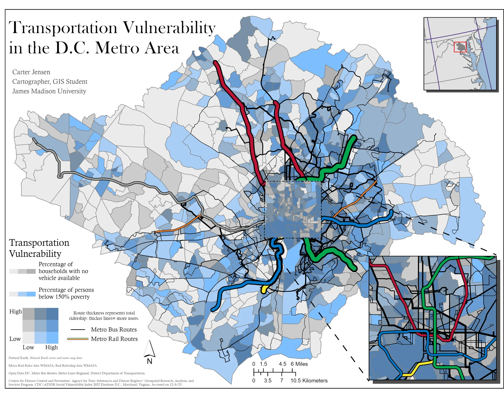

Transportation Vulnerability in the D.C. Metro Area
This map examines transportation vulnerability across the D.C. metro area by combining two socioeconomic indicators into a bivariate choropleth at the census tract level: the percentage of persons below 150% of the poverty line, and the percentage of households with no vehicle available. Together, these two variables identify communities that are both economically constrained and car-dependent — the most transportation-vulnerable areas in the region.
WMATA metro rail and bus routes are overlaid on top, with line thickness scaled to ridership so thicker lines represent higher-use corridors. This layering reveals where transit infrastructure aligns — or fails to align — with the communities that need it most. The inset map in the lower right zooms into the urban core to show the dense transit network in central D.C. more clearly. Created in ArcGIS Pro for GEOG 365 at James Madison University.
